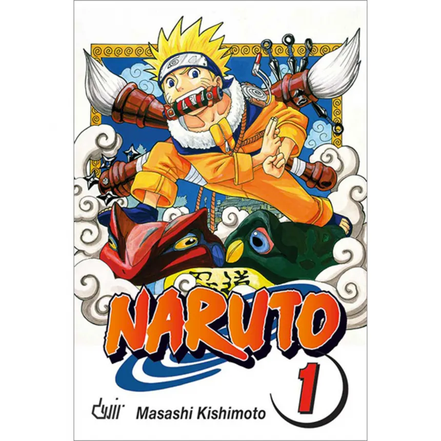
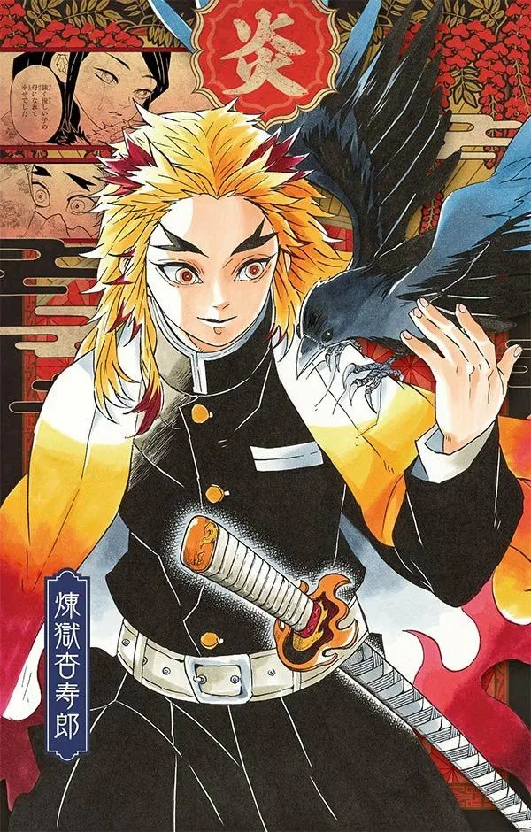
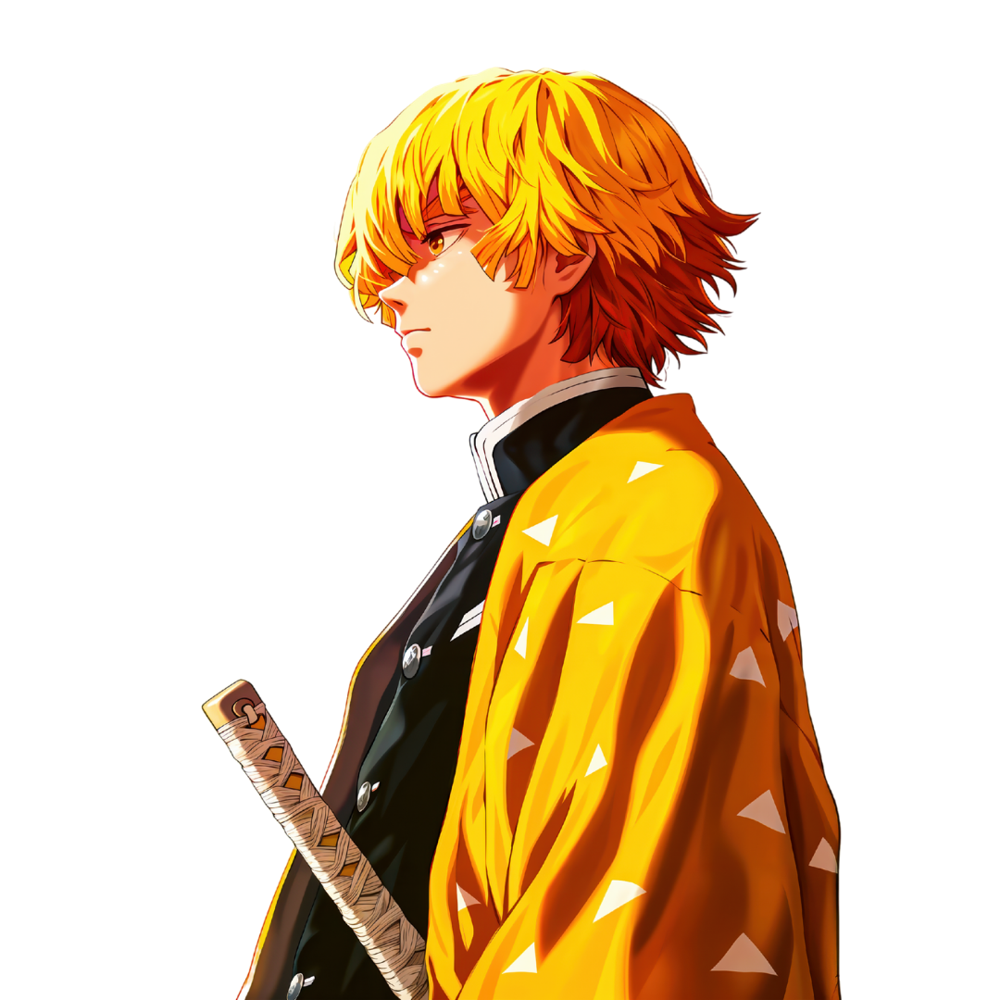

Por volta de 2015, conheci Naruto e fiquei fascinado por ele e por tudo o que representava. Foi a primeira vez que uma história me fez acreditar que, mesmo quando tudo parece impossível, ainda vale a pena tentar. E também foi o meu primeiro contado de fã com uma obra japonesa do qual comecei a acompanhar e comprar brindes.
“Se estiver se sentindo desmotivado ou sentindo que não é bom o suficiente, incendeie o seu coração. Enxugue as lágrimas e siga em frente.”


Compartilhe teorias, debata seus animes favoritos e descubra novas interpretações em conversas com outros fãs.
Mostre sua personalidade com seus animes favoritos, personagens marcantes e preferências. Deixe seu espaço com a sua cara.
Conheça fãs com gostos parecidos, troque recomendações e transforme interesses em novas amizades.
Entre para nossa comunidade.